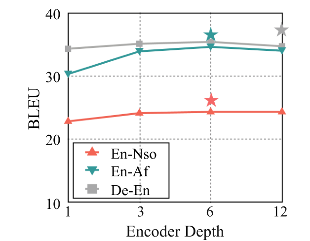
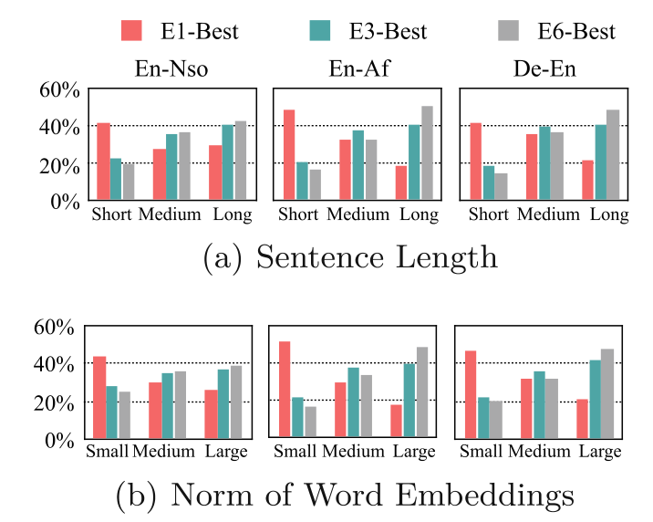

Simple text often favors a shallow encoder.
For a 1-layer vs. 6-layer encoder comparison, the shallow model wins on 54%, 52%, and 60% of test sentences in En–Nso, En–Af, and De–En, respectively.
Table 1 · sentence-level BLEU comparison, E1 vs. E6
NATASHA
Understanding and Improving Low-Resource Neural Machine Translation with Shallow Features
A simple way to teach deep translation models what shallow models do best.
¹ Best encoder configuration per task, Table 2. ² Combined result, Table 3. Scores are from the paper.
In low-resource settings, simply adding encoder layers gives diminishing returns. Sentence-level analysis reveals what aggregate scores can hide.
For a 1-layer vs. 6-layer encoder comparison, the shallow model wins on 54%, 52%, and 60% of test sentences in En–Nso, En–Af, and De–En, respectively.
Table 1 · sentence-level BLEU comparison, E1 vs. E6
Shallow encoders excel on shorter sentences and sentences with smaller word embedding norms. Their distilled outputs offer a way to pass these useful patterns to a deeper model.
Section 3.3 · Figure 3

Enlarge ↗
Enlarge ↗NATASHA transfers shallow features through sequence-level knowledge distillation, using the same parallel corpus and model architecture.
Fit a shallow NMT model on the original parallel corpus D.
Translate the training sources with that model to form a distilled corpus Dshallow.
Blend original and distilled pairs, then train the deep model on the hybrid corpus.
Two configurations. NATASHA-E6 learns from an E3 teacher; NATASHA-E12 learns from an E6 teacher. The decoder remains 6 layers in both cases.
View the paper’s frameworkExplore the results across parallel corpora from 30K to 610K sentence pairs. Each card compares models at the same encoder depth.
English → Northern Sotho
English → Afrikaans
German → English
Turkish → English
Romanian → English
Table 2 · BLEU is case-sensitive, tokenized, 4-gram BLEU (multi-bleu.perl). TER is Translation Edit Rate.
| Model | En–Nso30K | En–Af50K | De–En160K | Tr–En190K | Ro–En610K |
|---|---|---|---|---|---|
| E1 | 22.869.2 | 30.359.1 | 34.352.2 | 16.374.4 | 33.055.3 |
| E3 | 24.168.0 | 33.954.9 | 35.151.6 | 17.672.6 | 34.054.6 |
| E6 | 24.368.8 | 34.654.4 | 35.451.1 | 18.172.1 | 34.154.8 |
| E12 | 24.367.7 | 34.055.2 | 34.751.5 | 18.071.8 | 34.354.2 |
| NATASHA-E6 | 25.965.0 | 35.952.7 | 36.449.9 | 18.770.3 | 34.453.9 |
| NATASHA-E12 | 25.465.7 | 35.552.4 | 37.049.5 | 19.470.0 | 35.353.5 |
Combine shallow features with regularization or data augmentation to improve further.
Table 3 · BLEU · bar lengths use a shared 0–50 scale.
Doubling data or using self-distillation brings smaller gains. Shallow features drive the improvement.
| Training variant | BLEU |
|---|---|
| Vanilla E6 | 35.4 |
| Vanilla E12 | 34.7 |
| E12 + data upsampling | 35.0 |
| E12 + self-distillation | 35.2 |
| E12 + tagging shallow data | 36.5 |
| NATASHA-E12 | 37.0 |
Table 4 · IWSLT14 De–En. NATASHA-E12 gains +2.3 BLEU over vanilla E12.
The paper’s training-stage analysis suggests that shallow-distilled data helps the model learn easier patterns early, then improve on harder text.
Relative to vanilla E6, NATASHA-E12 improves short-sentence BLEU from 32.0 to 33.4 and high-frequency word accuracy from 67.7% to 68.5%. Low-frequency words and long sentences lag at this stage.
Low-frequency word accuracy rises from 45.3% to 47.4%, while long-sentence BLEU improves from 31.9 to 33.1. Overall test BLEU reaches 37.0, compared with 35.4 for E6.
Table 5 · IWSLT14 De–En · low frequency: <50 occurrences; high frequency: >200; short sentences: <30 words; long sentences: >50 words.
Encoder depth is an important design choice in neural machine translation, but its benefits are less reliable when parallel data is scarce. This work systematically compares encoder depths in low-resource settings and finds that shallow encoders often translate simpler sentences more effectively.
NATASHA uses a shallow model to translate the training sources, then combines the resulting sequence-level distillation data with the original parallel corpus to train a deeper model. Evaluations across five low-resource tasks show consistent improvements, with further gains when combined with R-Drop and CipherDAug. The method needs no architecture changes or additional corpora.
Further analysis links its benefits to a progression from better learning of simple patterns early in training to improved translation of low-frequency words and long sentences in the final model.
Publisher record and original abstract@inproceedings{sun2025natasha,
title = {Understanding and Improving Low-Resource Neural Machine Translation with Shallow Features},
author = {Sun, Yanming and Liu, Xuebo and Wong, Derek F. and Lin, Yuchu and Li, Bei and Zhan, Runzhe and Chao, Lidia S. and Zhang, Min},
booktitle = {Natural Language Processing and Chinese Computing: NLPCC 2024, Proceedings, Part III},
series = {Lecture Notes in Computer Science},
volume = {15361},
pages = {227--239},
publisher = {Springer Nature Singapore},
year = {2025},
doi = {10.1007/978-981-97-9437-9_18},
url = {https://doi.org/10.1007/978-981-97-9437-9_18}
}NLPCC 2024 proceedings · print volume published in 2025; first online on 1 November 2024.